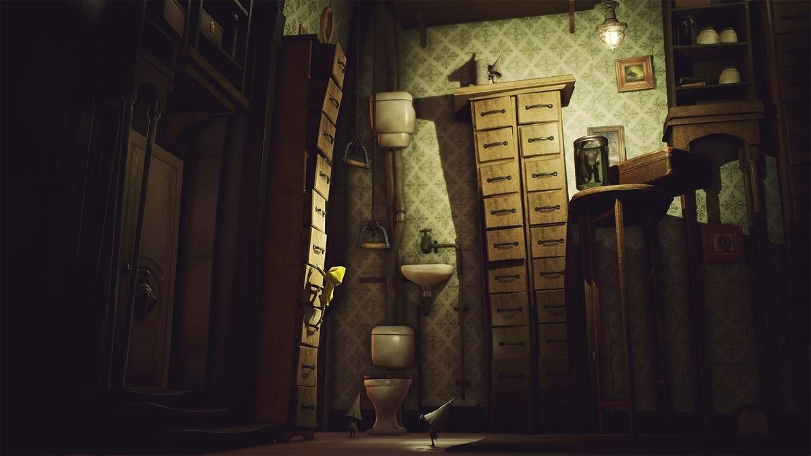

A Study of Little Nightmares by Tarsier Studios: Sound Devices in the Horror Game

Opening
Little Nightmares follows a small girl in a raincoat who wakes up on a suitcase with no memory in a strange and dark place. Armed only with a deep and insatiable hunger, the little girl "Six", must traverse through the immense labyrinth known as the "Maw" looking for any way to escape. During the game's three acts, Six slowly begins uncovering the horrendous truth about The Maw and why her hunger is so unquenchable.

Sound and Anzieu
Everytime instance Six gets hungry in Little Nightmares. Three devices that can always be observed during these occurrences are the deep hunger grumbles, heartbeats, and glassy bell-like sounds.
As Six's body physically cries out for sustenance, we may attribute Didier Anzieu's theory The Skin Ego. Anzieu states that the cry of hunger is a key fundamental leap in developing communication and language skills. As Six does not speak. :Note 1
Running Away
While being chased by the assortment of monsters, each notable encounter is signaled by a rapid heartbeat audible cue. Watch and take notice of the audible cues and how they might elicit apphrension and fear in the player while Six is hunted and subsequently chased by the blind Janitor monster. Who will prevail?
Every chase scene in the game can be described as the "Fort/Da" phenomenon originally observed by Sigmund Freud. :Note 2. As the recurrent themes of peekaboo emerge between Six and the monsters within the Maw, the apprehension and fear felt in the player begin to turn into an compulsion to master the art of running away successfully.
The Arc and Ending
Act I
Six awakens from a dream of a woman wearing a mask. Equipped with only a lighter, she sneaks through the bowels of the Maw, a massive, underwater vessel. In the Prison area in Act I, there are captured children being held. Evading leeches that infest its depths and artifical eyes that turn her into stone if she is caught in their otherworldy gaze. Six often experiences debilitating bouts of hunger. After eating some mysterious meat found inside of a cage, Six is captured by the blind, long-armed Janitor who is the one capturing children, tying, and wrapping them up in paper. Six manages to escape, but makes no effort to aid the other children in cages. She then falls into a room filled with piles of shoes and must then evade an unseen monster moving underneath them. The Janitor eventually corners Six, and after a bout of peekaboo, Six severs his arms with a collapsing door and flees.
Act II
Caught by another bout of painful hunger, Six is forced to eat the first thing she comes in contact with, a live rat. She then continues to travel until she stumbles upon the Kitchen of the Maw. Here she learns where all the captured children, whom were being wrapped up in butcher paper, are being sent to. Here, the grotesque Twin Chefs are found preparing a massive feast, using the meat of the now discovered butchered children. The Twin Chefs eventually spot Six sneaking around and begin to pursue her; throwing dishes or attempting to toss her into the evenings stew, but are unsuccessful as she escapes further into the Maw.
Act III and Ending
As Six makes her way outside to the hull of the Maw and is greeting by the first glimpse of sunlight since she has entered this hellish vessel. Scaling the hull, Six witnesses a procession of obese, suited Guests marching into the Maw from a separate transportation vessel. They lumber into the Japanese-style guest Area, where they gorge themselves on food. The feast is overseen by the mysterious Lady from Six's dream, the masked proprietress of the Maw. Several Guests attempt to swallow Six as she passes, but are unsuccessful. Six then is consumed by another hunger attack, when a gnome offers her a sausage. However, this time Six decides to eat the gnome instead. Six follows the Lady up into her quarters, which is crowded with broken mirrors. Quickly the Lady discovers Six and begins to pursue. While evading, Six finds an unbroken mirror, which she uses to repel the Lady. The sight of her own reflection causes the Lady pain and subdues her. As the Lady lies defenseless after a long battle, Six experiences a final hunger attack. Six begins devouring the Lady's neck, killing her and absorbing her magical powers. Now with no one standing in her way, Six walks back through the guest Area, surrounded by a dark aura. Along the way some of the Guests try to eat her, but their lives are instantly drained by her newfound powers. She passes through the final door and proceeds up a towering staircase and out into the sunlight.
Thoughts
Little Nightmares is truly a short and packaged horror game puzzle masterpiece. The game leaves alot open to the imagination of the player, while the stunning visuals and sound design from the game developer is top tier. I highly recommend acquiring this game to experiencing this mastery over fear and apprehension.
Gameplay Trailer
Sources:
Note 1: Anzieu, Didier The Skin Ego translated by Chris Turner (New Haven: Yale University Press, 1989).
Note 2: Freud, Sigmund "Beyond the Pleasure Principle" in The Standard Edition translated by James Strachey (London: The Hogarth Press, 1957).